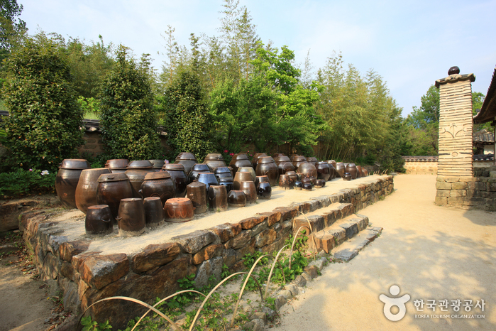
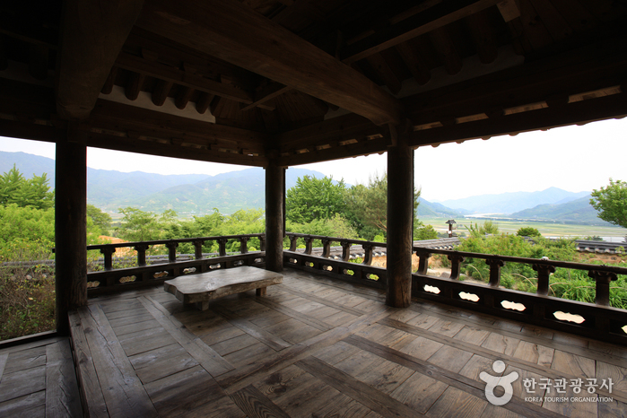

최참판댁
 
지역 : 경남 하동
설명 : 소설 '토지'에 등장했던 최참판댁을 실제로 구현하여 조선시대의 생활을 엿볼 수 있는 곳.
웹사이트 링크 1:
http://www.hadong.go.kr/02639/02644/02672.web
웹사이트 링크 2:
https://place.map.kakao.com/10889052
웹사이트 링크 3:
https://goo.gl/maps/1icaF5L9wEdwcjME9